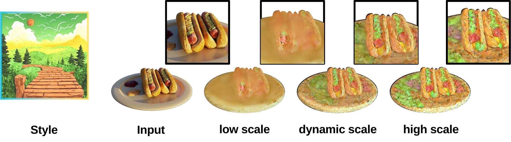

Ablation: DSSD
Ablation on DSSD (Dynamic Style Score Distillation)
ACM MM 2025 ID 981


3D Gaussian Splatting (3D GS) excels in photorealistic scene reconstruction but struggles with stylized scenarios (e.g., cartoons, games) due to fragmented textures, semantic misalignment, and limited adaptability to abstract aesthetics. We propose StyleMe3D, a holistic framework for 3D GS style transfer that integrates multi-modal style conditioning, multi-level semantic alignment, and perceptual quality enhancement. Our key insights include: (1) optimizing only RGB attributes preserves geometric integrity during stylization; (2) disentangling low-, medium-, and high-level semantics is critical for coherent style transfer; (3) scalability across isolated objects and complex scenes is essential for practical deployment. StyleMe3D introduces four novel components: Dynamic Style Score Distillation (DSSD), leveraging Stable Diffusion's latent space for semantic alignment; Contrastive Style Descriptor (CSD) for localized, content-aware texture transfer; Simultaneously Optimized Scale (SOS) to decouple style details and structural coherence; and 3D Gaussian Quality Assessment (3DG-QA), a differentiable aesthetic prior trained on human-rated data to suppress artifacts and enhance visual harmony. Evaluated on NeRF synthetic (objects) and Tanks & Temples (scenes) datasets, StyleMe3D outperforms state-of-the-art methods in preserving geometric details (e.g., carvings on sculptures) and ensuring stylistic consistency across scenes (e.g., coherent lighting in landscapes), while maintaining real-time rendering. This work bridges photorealistic 3D GS and artistic stylization, unlocking applications in gaming, virtual worlds, and digital art.

Overview of our pipeline for 3D stylization with three modules:
(a) Style Purification: Extracts and refines style representations via Style Cleaning in CLIP space, removing content interference from reference images.
(b) Multi-Expert Stylization: The Dynamic Style Score Distillation (DSSD) module employs dynamic noise scheduling and adaptive style guidance, integrating latent losses to achieve consistent stylization step by step. Integrates three specialized components within the Dynamic Style Score Distillation (DSSD) framework: Simultaneously Optimized Scale (SOS):Adaptive noise scheduling for texture preservation. Contrastive Style Descriptor (CSD):Separates style and content via contrastive learning for style similarity score.
(c) Progressive Consistency Optimization (Style Outpainting): Progressive outpainting achieves multi-view style propagation. Ensures coherent through iterative latent alignment, eliminating multi-view dependencies.
Visual Results: This figure demonstrates the performance of our method across five styles (vangogh wheat field, star night, fire nezha, colorful oil, and lighting tiger) applied to five objects(chair, ship, hotdog, lego and mic) and two scenes (man face and train).
These results highlight the model's capability to handle two main categories of styles:
Our method demonstrates versatility and semantic-aware ability in stylizing 3D models while preserving both style fidelity and geometric consistency. For example:
These features are effectively preserved, ensuring high-quality results across diverse artistic and physical characteristics.
Qualitative Comparisons on Object Level Stylization.
Qualitative Comparisons on Scene Level Stylization.
Ablation on DSSD (Dynamic Style Score Distillation)
Ablation on PSO (Progressive Style Outpainting)
Ablation on Multi-Export
Styleshot: A Snapshot on Any Style (Gao et al., 2024).
Ip-adapter: Text Compatible Image Prompt Adapter for Text-to-Image Diffusion Models (Ye et al., 2023).
Instantstyle: Free Lunch Towards Style-Preserving in Text-to-Image Generation (Wang et al., 2024).
3D Gaussian Splatting for Real-Time Radiance Field Rendering (Kerbl et al., 2023).
StyleGaussian: Instant 3D Style Transfer with Gaussian Splatting (Liu et al., 2024).
SGSST: Scaling Gaussian Splatting Style Transfer (Bruno Galerne et al., 2024).